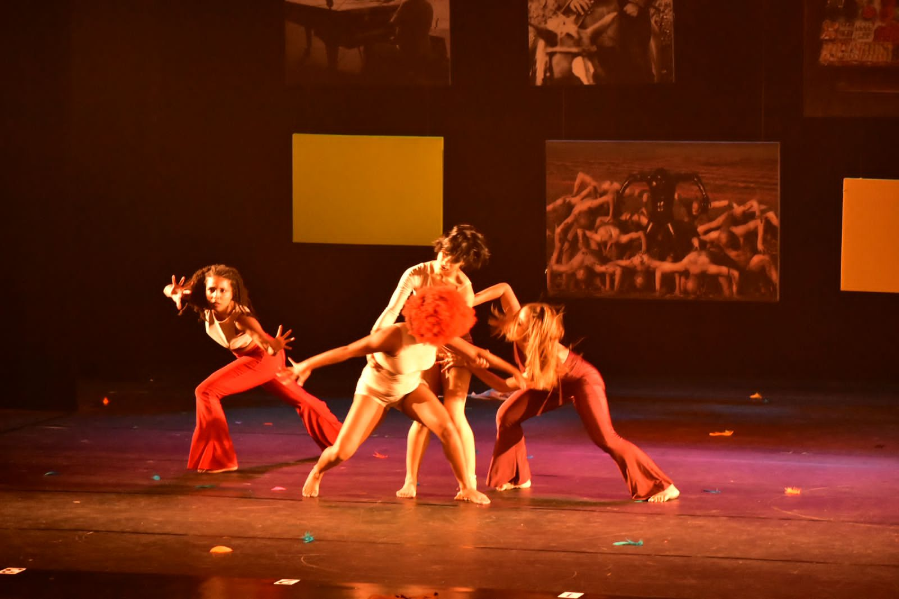
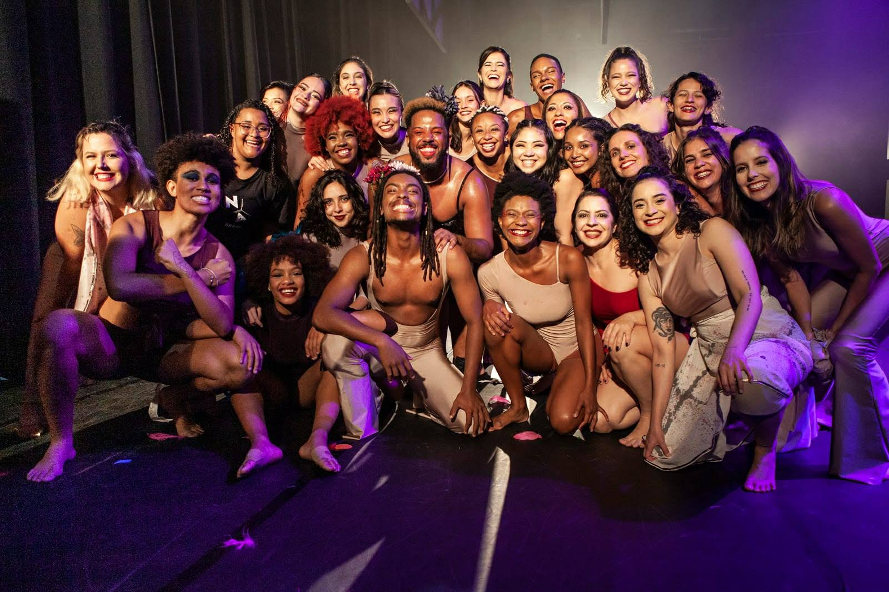
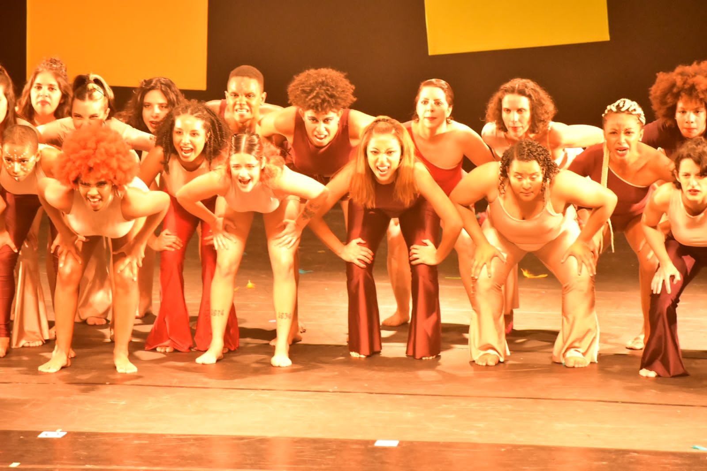
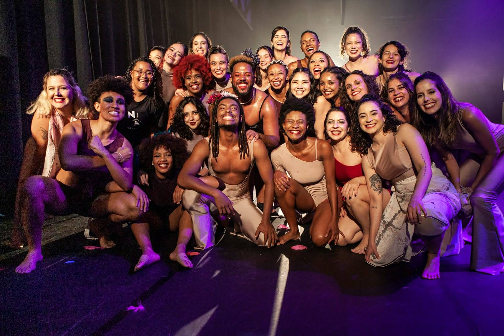
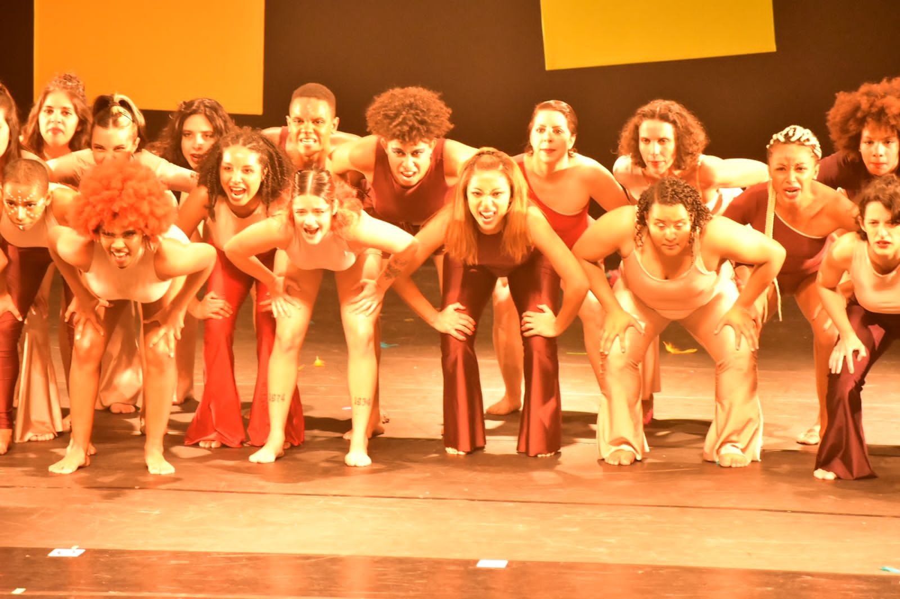
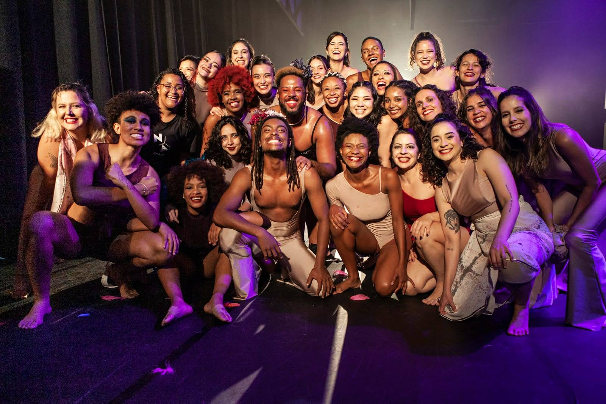
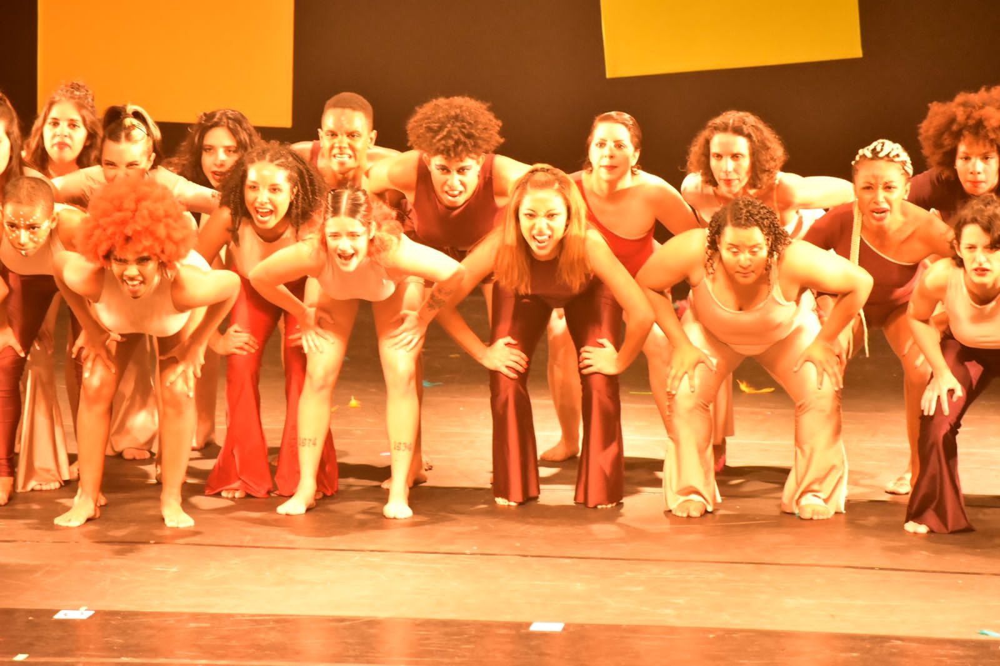

Trabalhos

 



Bailarina Internacional, coreografa de Ritmos e Jazz Funk, Top Trainer Lambaerobica no Air Dance Instructor
MISSIGENAÇÃO


MISSIGENAÇÃO este foi o título da coreografia de contemporâneo do espetáculo DNA Brasileiro pela escola de dança Centro de Movimento Deborah Colker. Uma escola cuja quantidade de professores negros cabem em uma mão. Meu professor, também diretor, de Dança contemporânea Raphel Rodrigues colocou a alma nesse projeto.
Foi uma coreografia que denunciasse o racismo desde sempre pesente no nosso país e que contasse que a missigenação, ao contrario do que muitos pensam, não foi um processo 'lindo de reciprocidade', mas sim forçada atravéz de situações como a escravidão, morte, estupro e várias outras. Durante o processo recordamos nossa hstória como alunos negros, asiáticos e também brancos. Lembramos de canções da época da escravidão, as tranças que simbolizavam caminhos de fuga e que hoje são vistas apenas como mais um aspecto da beleza.
Começamos a coreografia com um duo de um homem negro e mulher "branca" onde para as pessoas pode parecer uma agreção física da parte dele, mas como dá para notar pela feição da mulher, na verdade está acontecendo uma manipolação para que vejam ela como coitada. Depois temos o confrontro entre a rainha branca e outra rainha, guerreira que pela cor da pele e cultura não é vista em tal posição de realeza. A seguir tenhos uma gerra civil entre 2 partes pelo poder. Podemos observar a seguir que agora estamos 'todos juntos' porque todos fazemos parte do mesmo pedaço de terra. Acontece um ataque, pessoas morrem, outras resistem. Mingração asiática, também não por vontade própria. Mas como são a minoria, niguém realmente se importa. Um pensamento generalizado é que também vieram nos atacar. Mas nessa história a moeda tem dois lados, os escrávos asiáticos. Agora temos um dueto 'alegre' para que parem de ver negros sempre em posição de ataque. Porque não somos assim, comos socialmente obrigados a estar em tal posição para defender nosso direito de vida. Grito de guerra. Não queremos assustar, mas nos fazer pesente. Também somos um povo, também somos possoas, mães, pais e filhos. Somos uma nação como qualquer outra, me atrevo a dizer "com mais valor", caso contrário não roubariam TUDO o que temos. E a coreografia termina com o texto de uma canção: "O Mundo" - Zeca Brasileiro. Brasil?
O Brasil é um país majoritáriamente negro e indígena. Então porque o negro é assassinado e o indígena tem suas terras roubadas?
SÓ o fato do Brasil ser essa mistura de povos, essa missigenação deveria ser motivo para sermos unidos. Hoje somos todos misturados, somos um país só. Então pra quê nos dividimos em minorias? Para sermos politicamente divididos e assim nos demonstrar fracos diante de outras nações? Então parabéns Basil você conseguiu!
Dentro de uma nação temos VÁRIAS culturas completamente diferentes, ninguém é mais importante do que nguém. Estamos 'debaixo do mesmo sol', estamos dentro da mesma nação, queremos todos um só coisa: liberdade através do respeito alheio. Então porque, Brasileiros, você aponta o dedo para o seu similar? Porque, Brasileiros, você inveja beleza no que é "gringo" sem conhecer seu próprio país? Como, Brasil, você quer ganhar respeito pela própria cultura se constantemente você imita a cultura de países Brancos?
Percebam que por mais que queiramos ver mudanças no país, não será possível se continuamos a lutar por algo que acreditamos da boca pra fora. A culpa não é de um homem só. É de todo aquele que lê relatos históricos sobre o nosso país e continua cometendo os mesmos erros! Cegos? Não, fracos? Talvez. Submissos? Inconciêntemente.
E aí Brasil? Qual é o teu negócio?